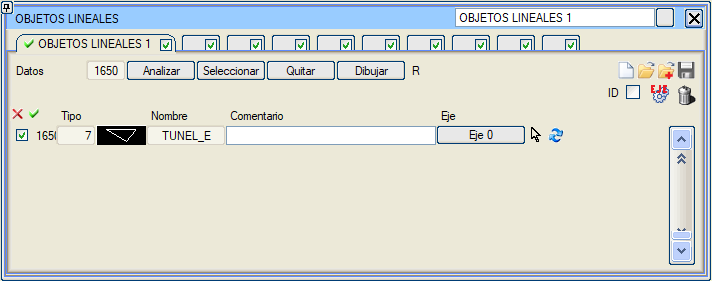
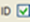
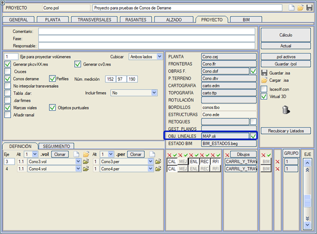
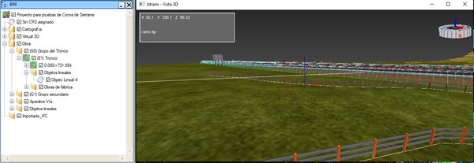
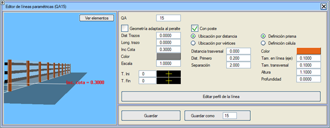

| |
|
ÇİZGİSEL OBJELER
|
Bu menü, çizim alanından poligon hatları almak ve bunları ".oli" uzantılı bir dosyaya kaydetmek için kullanılır. Bilgiler, eleman yönetimini kolaylaştırmak için 4 sekmede toplanmıştır. .oli dosyası, "PROJE" sekmesinden yüklenebilir ve proje hesaplandığında içeriğinin çizilip çizilmeyeceği belirtilebilir. 
Poligon hatlarının kotunu mevcut EKSEN veya SAM (Sayısal Arazi Modeli) kullanarak hesaplama seçeneğimiz bulunmaktadır. İşleyişi, Noktasal Objeler'deki Serbest Hücreler ile aynıdır.  Bu bayrak (flag) etkinleştirilirse, plan üzerinde objenin kimlik numarasıyla birlikte, çizgisel objenin başlangıcında bir I ve sonunda bir F harfi ile bir metin görüntülenir. Çizgisel obje, Eksen sütunu aracılığıyla bir eksene veya bir Kavşak Koluna ilişkilendirilebilir. R düğmesi ile çizgisel objelerin neyin ve nasıl etiketleneceğini yapılandırabileceğiniz iletişim kutusuna erişilir. Sadece Mevcut Sekmenin mi yoksa Tümünün mü etiketleneceği belirtilir. Ayrıca, sadece Mevcut Verinin mi, Tüm çizgisel objelerin mi (mevcut sekmedeki veya Tüm sekmelerdeki) yoksa sadece aktif çizgisel objelerin mi (hem mevcut sekmedeki hem de tüm sekmelerdeki) etiketleneceği seçilir. Ayrıca, metnin çizgisel objeye göre Boşluğunu, etiketin Tipini, metnin Yüksekliğini ve Hizalamasını yapılandırmak da mümkündür. Proje sekmesinden, .oli dosyasını kaydettikten sonra: 
BIM Ağacı oluşturulurken, .oli dosyasında tanımlanan çizgisel objeler ile "Çizgisel Objeler" menüsünde çizilenler dahil edilir. Eksen başına bir klasör oluşturulur ve eğer atanmış bir eksen yoksa, Obra (Proje) klasöründe oluşturulur. 
Not: Eğer bir çizgisel obje parametrik bir çizgi aracılığıyla oluşturulursa, 3B Görselleştirme'ye erişildiğinde parametrik çizgi oluşturulmaz, bu sayede çizgisel obje ile 3B Görselleştirme'den etkinleştirilebilir/devre dışı bırakılabilir. Parametrik çizgilerin düzenleme menüsünden bu tür 3B çizgileri tanımlama imkanımız vardır: 
|